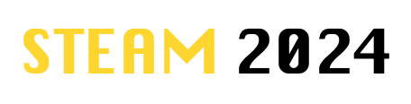

Aquí podrás ir a la convocatoria LIMATEJ FEMENIL 2024
LIMATEJ FEMENIL 2024REGISTRO LIMATEJ FEMENIL 2024
REGISTRO LIMATEJ FEMENIL 2024Nota: El Registro lo puede hacer cualquier alumna a más tardar el día 6 de marzo de 2024

Aquí podrás ir a la convocatoria LIMATEJ 2024
STEAM 2024Fecha de Fase de Zona "Pendiente"
Desliza hacia abajo el formulario, para ser llenado.
Mira el siguiente PDF
Como apoyo al trabajo STEAM
Aquí puedes ver Material STEAM y LIMATEJ 2023
MATERIALAquí podrás ir a la convocatoria CREACIÓN LITERARIA 2024
CREACIÓN LITERARIA
La fecha límite para la entrega de documentos será el 8 de marzo de 2024